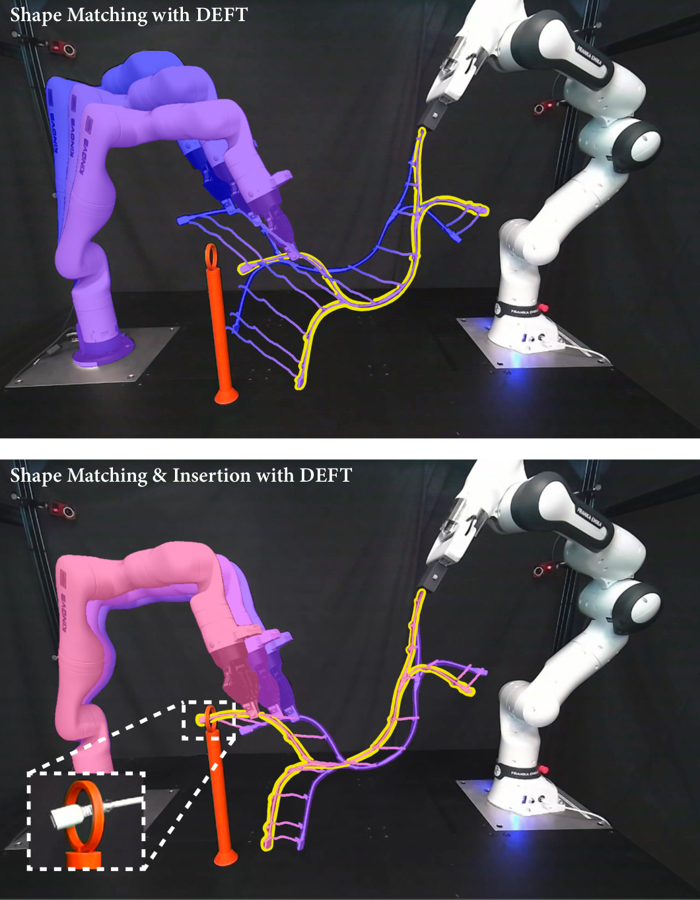
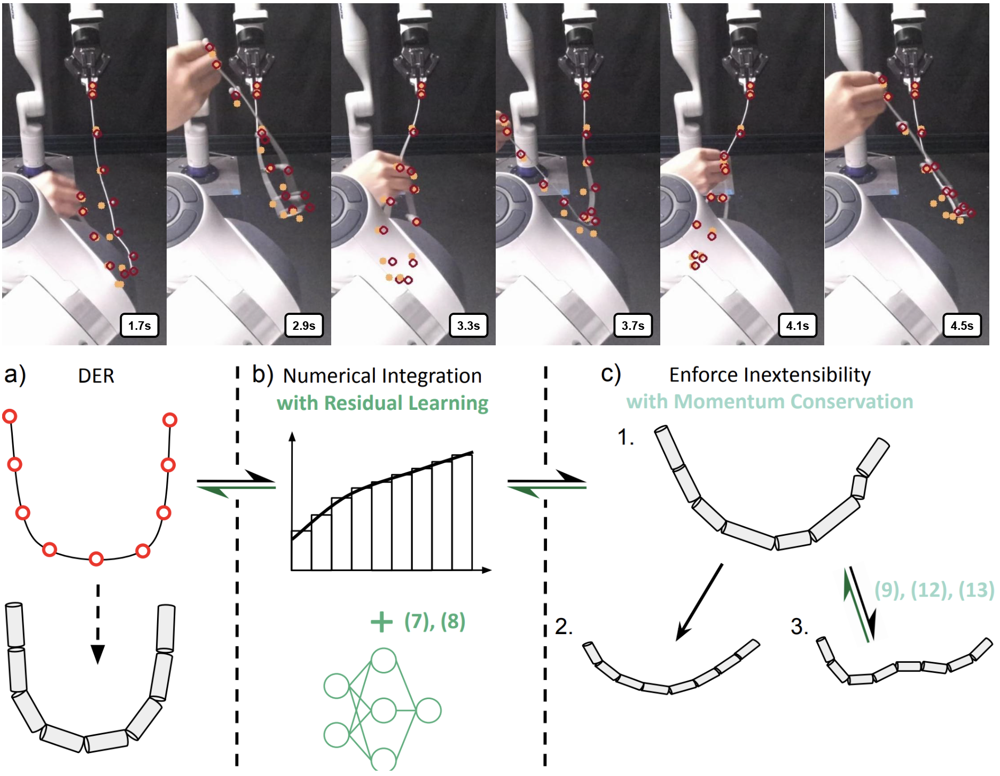
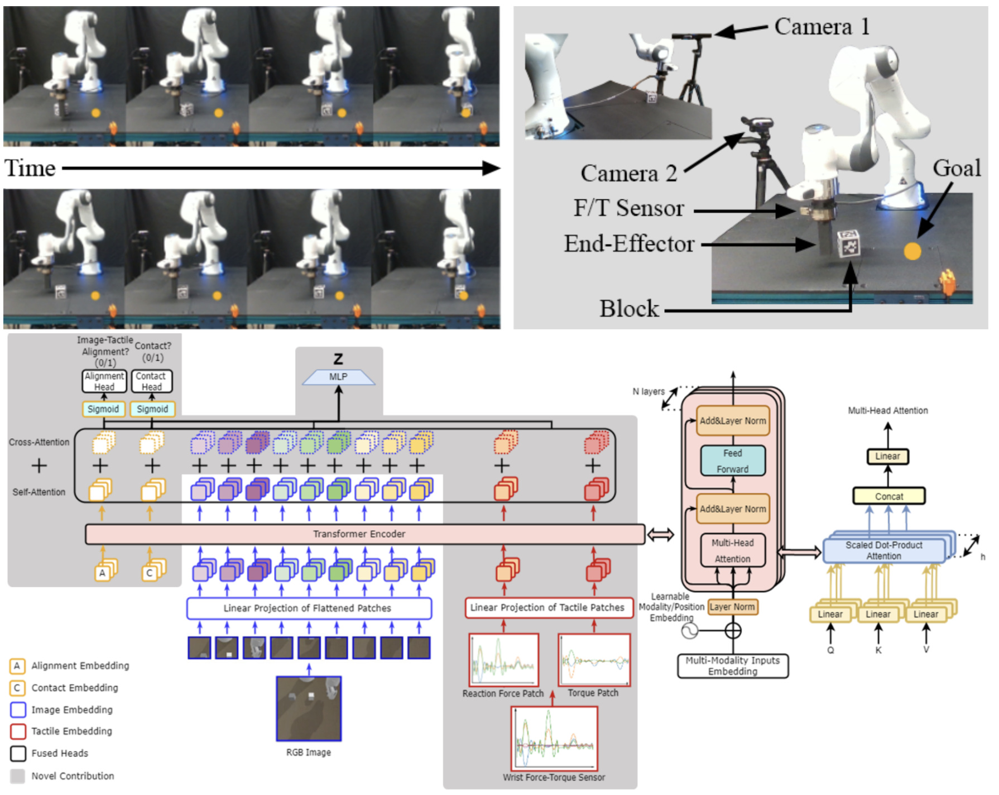

|
Yizhou Chen
I am currently a Ph.D. candidate in robotics at the University of Michigan.
I am a member of ROAHM Lab supervised by Prof. Ram Vasudevan.
My current research interests include the perception, modeling, and planning of deformable objects.
My dream demo is to make wireharness assembly fully autonomous.
Previously, I worked at MMint Lab, supervised by Prof. Nima Fazeli, researching visuo-tactile representation for robotic manipulation.
Email /
CV /
Scholar /
Github
|
|
|

|
DEFT: Differentiable Branched Discrete Elastic Rods for Modeling Furcated DLOs in Real-Time
Yizhou Chen, Xiaoyue Wu, Yeheng Zong, Anran Li, Yuzhen Chen, Julie Wu, Bohao Zhang, Ram Vasudevan
arXiv, 2025
arXiv /
project website
This paper presents Differentiable discrete branched Elastic rods for modeling Furcated DLOs in real-Time (DEFT), a novel framework that combines a differentiable physics-based model with a learning framework to:
1) accurately model branched deformable linear objects (BDLOs) dynamics, including dynamic propagation at junction points and grasping in the middle of a BDLO,
2) achieve efficient computation for real-time inference,
and 3) enable planning to demonstrate dexterous BDLO manipulation.
|
|

|
Differentiable Discrete Elastic Rods for Real-Time Modeling of Deformable Linear Objects
Yizhou Chen, Yiting Zhang, Zachary Brei, Tiancheng Zhang, Yuzhen Chen, Julie Wu, Ram Vasudevan
CoRL, 2024
arXiv /
project website
This paper proposes differentiable Discrete Elastic Rods For deformable linear Objects with Real-time Modeling (DEFORM), a novel framework that combines a differentiable physics-based model with a learning framework to model deformable linear objects (DLOs) accurately and in real-time.
To further demonstrate the utility of DEFORM, this paper integrates it into a perception pipeline and illustrates its superior performance when compared to the state-of-the-art methods while tracking a DLO even in the presence of occlusions.
Finally, this paper illustrates the superior performance of DEFORM when compared to state-of-the-art methods when it is applied to perform autonomous planning and control of DLOs.
|
|

|
Differentiable Discrete Elastic Rods for Real-Time Modeling of Deformable Linear Objects
Yizhou Chen, Yiting Zhang, Zachary Brei, Tiancheng Zhang, Yuzhen Chen, Julie Wu, Ram Vasudevan
CoRL, 2022
arXiv /
project website
Learning representations in the joint domain of vision and touch can improve manipulation dexterity, robustness, and sample-complexity by exploiting mutual information and complementary cues.
Here, we present Visuo-Tactile Transformers (VTTs), a novel multimodal representation learning approach suited for model-based reinforcement learning and planning.
Our approach extends the Visual Transformer to handle visuo-tactile feedback. Specifically, VTT uses tactile feedback together with self and cross-modal attention to build latent heatmap representations that focus attention on important task features in the visual domain.
|
|
{kind=link}